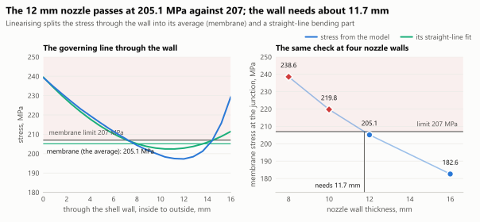

The Question
A 200 mm bore nozzle with a 12 mm wall goes into a 1000 mm bore shell with a 16 mm wall, at 3.5 MPa. Can it go in without a reinforcing pad? And how thin can the hemispherical head on the same shell be?
It's judged the way ASME's design-by-analysis rules (Section VIII, Division 2, Part 5) judge it: the stress through the wall is split into a membrane part and a bending part, and each is held to its own limit. The allowable stress, S = 138 MPa, is a typical carbon-steel value, not taken from the code's tables.
The Answer
It depends on where one line is drawn, and I'd judge it by the stricter one. Read on lines at the toes of the weld fillet, the 12 mm nozzle passes with 0.9 % to spare and about 11.7 mm would do. Read on a line through the sharp inner corner, the other usual placement, the same model fails by 24 % and the wall needs about 20 mm. Both results are converged to a few hundredths of a percent, so the difference is the analyst's judgement, not the mesh.
My call: judge the opening by the corner line. That's where the hole concentrates the stress the membrane limit is there to control, and the weld-toe line sits just past it. So the nozzle needs about 21 mm, or a reinforcing pad, unless a limit-load analysis justifies something thinner. That analysis needs no line placed at all, and it's the next thing I'd run. A simpler pressure-area rule sits between the two, at about 16 mm.
The head is easy: its own membrane stress governs, not the junction with the shell, and it can be about 6.5 mm (a thin-sphere hand rule gives 6.34).
The Model
- Vessel
- A cylindrical shell, 1000 mm bore with a 16 mm wall, modelled for 1000 mm each side of the nozzle.
- Nozzle
- A radial nozzle, 200 mm bore with a 12 mm wall, standing 350 mm, set through the shell wall. A 10 mm weld fillet on the outside; the inner corner is left sharp.
- Head
- A separate axisymmetric model: the same shell closed by a hemispherical head with the same bore, with a plain step outside where the thicknesses differ.
- Material
- Steel, linear elastic: Young's modulus 200 GPa, Poisson's ratio 0.3. Allowable stress S = 138 MPa.
- Load
- 3.5 MPa on every inside surface. The pull of the closed ends is applied on the cut ends of the shell and nozzle, so far from the nozzle the shell behaves exactly like a closed cylinder.
- Symmetry
- A quarter of the vessel at the nozzle, cut on the two planes through the nozzle axis.
- Mesh
- Nozzle: quadratic tetrahedra, 6, 4 and 2.67 mm within 140 mm of the junction, growing to 14 mm; the finest has 284,554 nodes. Head: quadratic quadrilaterals at 2, 1 and 0.5 mm, laid out so every line through the wall falls on element edges.
- Limits
- General membrane away from the nozzle, Pm ≤ S. Local membrane at the junction, PL ≤ 1.5 S = 207 MPa. Membrane plus bending at the junction, P + Q ≤ 3 S = 414 MPa.
- Analysis
- Linear static in CalculiX 2.22 (3D for the nozzle, axisymmetric for the head), then stress linearisation along lines through the wall.
The case file: recorded assumptions, limits and inputs
This is the study's own record, written before the run and saved with it, in the shorthand of the case file.
Cylindrical shell (Ri 500 mm, t 16 mm) with a set-in radial nozzle (ri 100 mm, tn 12 mm, 10 mm outer weld fillet) at 3.5 MPa internal pressure; quarter model, CadQuery + Gmsh C3D10 + CalculiX static; stresses linearised along classification lines; local element size 6 / 4 / 2.67 mm at the junction.
Assumptions, and How Each Is Checked
- Linear elastic steel, E 200 GPa, nu 0.3; small displacement (checked).
- Closed vessel: the end thrusts of the shell and the nozzle are applied as uniform axial tractions on their cut ends (the far field is then the Lame closed-end cylinder exactly).
- Symmetry about the planes through the nozzle axis; no external nozzle loads (piping loads would add to the junction stresses).
- Outer weld modelled as a 10 mm fillet; the inner corner of the bore is sharp (affects peak stress, not the linearised values on the toe lines).
- Classification: membrane at the junction lines is local primary (PL), membrane plus bending there is primary plus secondary (P + Q); far from the nozzle the membrane is general primary (Pm). S_PS taken as 3 S.
- Allowable S = 138 MPa: synthetic, of the order of carbon-steel plate values; not from ASME Section II.
Limits
- Elastic analysis only: no limit-load or elastic-plastic route, no fatigue (peak stress reported, not assessed), no external loads, no corrosion allowance.
- The SCLs sit at the weld-fillet toes; other placements (through the crotch corner) give other values and are a judgement call.
- The pressure-area cross-check is a simplified form of the rule, not the standard's full procedure.
Inputs
| Input | Value |
|---|---|
| shell_inner_radius_mm | 500 |
| shell_thickness_mm | 16 |
| shell_half_length_mm | 1000 |
| nozzle_inner_radius_mm | 100 |
| nozzle_thickness_mm | 12 |
| nozzle_length_mm | 350 |
| weld_fillet_radius_mm | 10 |
| pressure_MPa | 3.5 |
| youngs_modulus_MPa | 200000 |
| poisson_ratio | 0.3 |
| element_size_local_mm | 4 |
| element_size_far_mm | 14 |
| refine_radius_mm | 140 |
| mesh_growth | 0.08 |
| allowable_stress_MPa | 138 |
cases/pv_nozzle_crotch_mesh_r1.toml ↗
Cylindrical shell (Ri 500 mm, t 16 mm) with a set-in radial nozzle (ri 100 mm, tn 12 mm, 10 mm outer weld fillet) at 3.5 MPa; as pv_nozzle_mesh, with the stresses also linearised on classification lines through the crotch corner; local element size 6 / 4 / 2.67 mm at the junction.
Assumptions, and How Each Is Checked
- Linear elastic steel, E 200 GPa, nu 0.3; small displacement (checked).
- Closed vessel: the end thrusts of the shell and the nozzle are applied as uniform axial tractions on their cut ends (the far field is then the Lame closed-end cylinder exactly).
- Symmetry about the planes through the nozzle axis; no external nozzle loads (piping loads would add to the junction stresses).
- Outer weld modelled as a 10 mm fillet; the inner corner of the bore is sharp (affects peak stress, not the linearised values on the toe lines).
- Classification: membrane at the junction lines is local primary (PL), membrane plus bending there is primary plus secondary (P + Q); far from the nozzle the membrane is general primary (Pm). S_PS taken as 3 S.
- Crotch lines (CROTCH_LONG, CROTCH_TRANS): from the sharp inner corner towards the weld fillet's centre, ending on the fillet surface, in each symmetry plane; the weld metal is the same steel. Their membrane is classified local primary (PL) and membrane plus bending primary plus secondary, as at the toe lines.
- Allowable S = 138 MPa: synthetic, of the order of carbon-steel plate values; not from ASME Section II.
Limits
- Elastic analysis only: no limit-load or elastic-plastic route, no fatigue (peak stress reported, not assessed), no external loads, no corrosion allowance.
- The inner corner is sharp: the crotch line starts at a stress singularity (integrable, so its linearised membrane converges); a fabricated corner radius would lower the crotch values somewhat.
- The pressure-area cross-check is a simplified form of the rule, not the standard's full procedure.
Inputs
| Input | Value |
|---|---|
| shell_inner_radius_mm | 500 |
| shell_thickness_mm | 16 |
| shell_half_length_mm | 1000 |
| nozzle_inner_radius_mm | 100 |
| nozzle_thickness_mm | 12 |
| nozzle_length_mm | 350 |
| weld_fillet_radius_mm | 10 |
| pressure_MPa | 3.5 |
| youngs_modulus_MPa | 200000 |
| poisson_ratio | 0.3 |
| element_size_local_mm | 4 |
| element_size_far_mm | 14 |
| refine_radius_mm | 140 |
| mesh_growth | 0.08 |
| allowable_stress_MPa | 138 |
Why It Matters
Cutting a hole in a pressure vessel removes material that was carrying the pressure, and the wall around the hole has to carry more. Design codes offer two ways to deal with it. Design by rule uses simple formulas with generous margins: quick, safe and often heavier than needed. Design by analysis uses a stress model of the actual shape and can justify a thinner wall, but it demands more care, because a finite-element model reports stresses the simple rules never see.
The care is in how the stress is read. The codes don't ask for the highest number in the model. They ask what the wall carries on average through its thickness (membrane) and how much it bends (bending), read along chosen lines through the wall. This study shows how much rides on choosing those lines: the first version of it read only the weld-toe lines and reported a narrow pass. Checking the other usual placement reversed the verdict.
How It Works
CadQuery builds the quarter vessel, Gmsh meshes it with small elements at the junction, and CalculiX solves it. The stresses are then read along straight lines through the wall, called stress classification lines. On each line the six stress components are averaged through the wall to give the membrane stress, and the straight-line variation gives the bending. Whatever is left over is the local peak, which these limits leave out by design: it matters for fatigue, not for bursting or yielding through.
There are three sets of lines. Four sit at the toes of the weld fillet, on the shell side and the nozzle side, in each of the two symmetry planes. Two run through the crotch, from the sharp inner corner towards the fillet's centre (24 mm long in the plane along the vessel). One is far from the nozzle, for the general membrane check. Both junction sets are then repeated at nozzle walls from 8 to 24 mm, to find the wall each one asks for.

The head is a separate, simpler model: a structured mesh written directly in Python, so the lines through the wall sit exactly on element edges. A sweep of head thickness finds where the head's own membrane stress reaches its limit, and checks the junction with the shell at each step.
How I Checked It
- Equilibrium is exact. The pressure on every wetted surface balances the reactions on both symmetry planes to 3 × 10⁻⁷. At the head, the axial reaction matches the end load to 6 × 10⁻⁸.
- Far from the junctions, exact solutions. The far shell matches the thick-cylinder (Lamé) solution within 0.03 %, and the far head matches the thick-sphere solution to 6 × 10⁻⁶.
- The head junction against shell theory. With equal thicknesses, thin-shell theory puts the largest bending in the shell at 16.26 MPa, 55.1 mm from the junction. The model gives 16.01 MPa at 55.6 mm. The 1.5 % is the theory's own approximation, of order the thickness over the radius.
- Mesh refinement. At 6, 4 and 2.67 mm, PL is 205.04, 205.13 and 205.13 MPa on the weld-toe line and 256.64, 256.63 and 256.67 MPa through the corner. The corner's own peak converges too (349.9, 351.0 and 351.1 MPa).
- A hand check on the corner value. The corner line's hoop membrane is 2.56 times the shell's plain hoop stress. A hole in a flat plate under the same 2 : 1 stresses has 2.50 at its edge (the Kirsch solution). So at the corner the 12 mm nozzle does little more than offset the extra concentration the shell's curvature adds. The weld-toe line, 22 mm further out, sits where that concentration has partly died away.
- A second route to the same decision. The simplified pressure-area rule, worked independently from the geometry, also says this nozzle is near its limit, and lands between the two placements.
What I Caught Along the Way
- A pass that depended on where the line was drawn. The first version of this study read only the weld-toe lines, reported "passes, narrowly", listed the placement as a judgement call not yet measured, and recommended 14 mm. Measuring it reversed the verdict: through the corner the same model gives 25 % more membrane stress, and 14 mm fails there. The recommendation was withdrawn. Moving the toe line a weld size further out, by contrast, changes PL by only 10 %.
- A convergence check fooled by a regenerated mesh. The corner values moved by under 0.02 % between meshes, but the differences grew, so the uncertainty estimate gave up. Five meshes at the same nominal size scattered by 0.08 to 0.3 %: Gmsh rebuilds the whole mesh at each size, so part of every difference is just which mesh came out. That scatter was measured, declared as the noise floor before a rerun, and the corner result became a verified fail.
- A maximum sampled at different places on each mesh. On the thin head, the largest stress sits a few millimetres from the junction, between the lines, so each mesh caught the peak at a different point and the check read it as divergent. Locating the peak between lines with a parabola settled the membrane stress. The membrane plus bending still spreads 1.5 %, and with a 58 % margin it is reported as unverified, not as a clean pass.
- A wrong explanation, corrected on review. I first described the inner corner as a stress singularity, where the stress never settles. Its peak converges, so it isn't one; the measured mesh noise explains the spread in the toe-line P + Q. The numbers and verdicts didn't change.
Limits, and What I'd Do Next
- Where the classification line goes is a judgement call, now measured rather than assumed. A limit-load or elastic-plastic analysis (the code's other routes) removes that judgement, and it's what I'd run before committing to a wall or a pad.
- Pressure only. No piping loads on the nozzle, no thermal gradients and no fatigue screening. Piping loads add directly to the junction stress.
- The allowable is synthetic and the pressure-area rule is a simplified form, so this follows the structure of a code calculation without being a stamped one.
- The inner corner is sharp and the weld idealised. The corner's stress is bounded and converged, so a fabricated radius would change the geometry slightly, not the conclusion. The head joins the shell with a plain step; the usual taper would lower the junction stress further.
- The viewer's render comes from solving the finest weld-toe mesh again, because the run didn't keep its full 3D results. The re-solve reproduces the run's membrane and bending stresses on every line to nine digits.